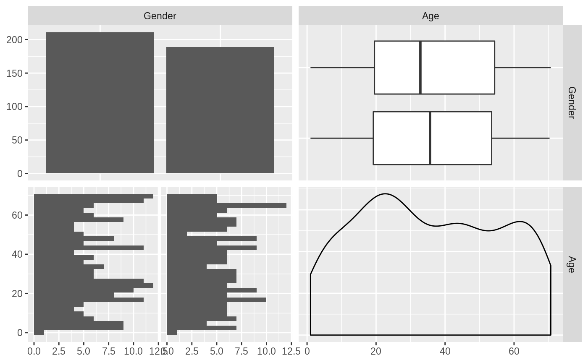
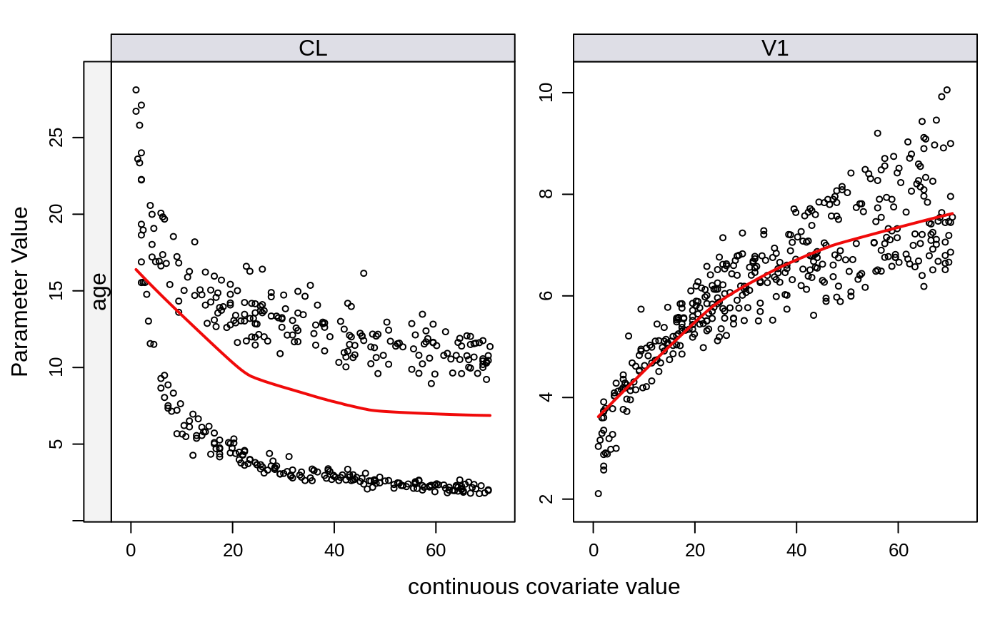
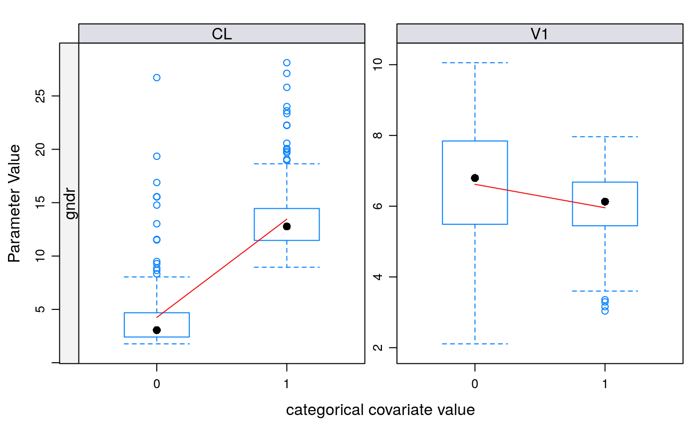
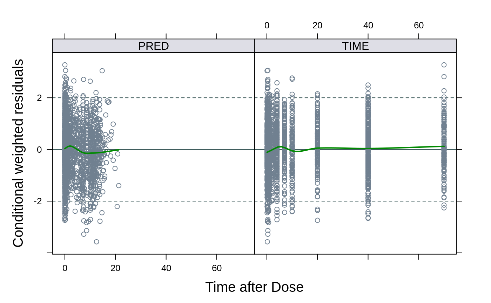
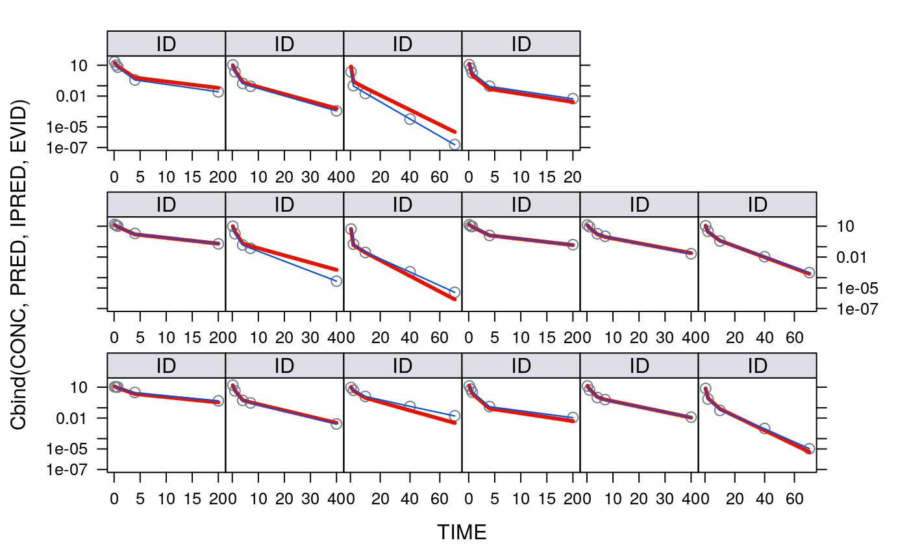
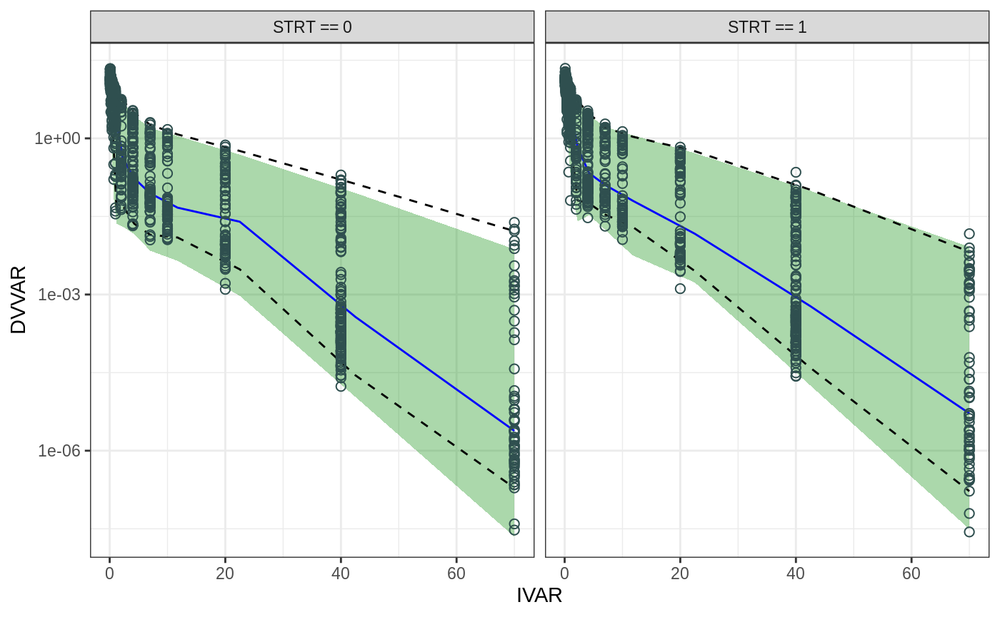
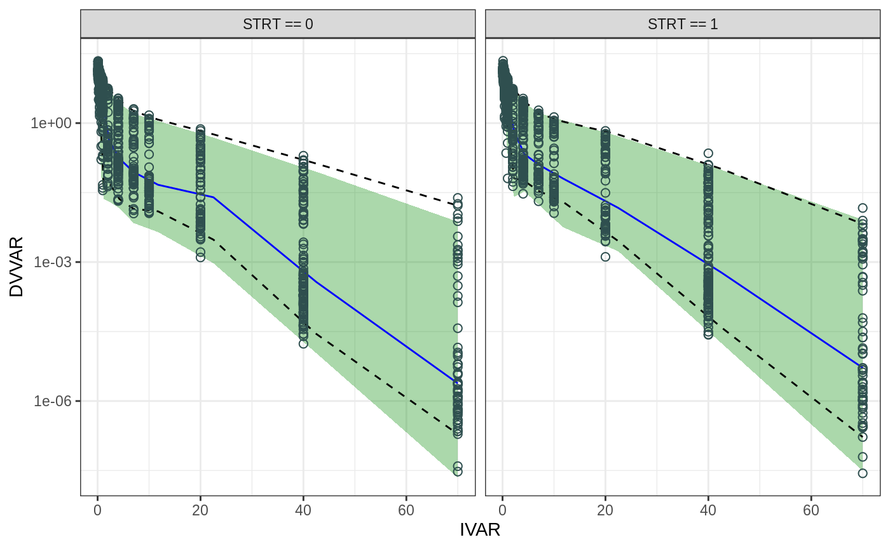

Run a NONMEM Analysis
Klaas Prins & Jason Chittenden
2020-05-11
RunaNONMEMAnalysis.RmdThis is an analysis notebook template/example using RMarkdown. This analysis uses examples from the NONMEM examples folder in a couple model development steps. Example 1 is a base model, example2 is the known covariate model (i.e. it was apparently simulated). The base model is reconfigured and run through PSN::SCM and the final model is rerun as example 3. This analysis notebook template demonstrates a few key features of Rmarkdown and the qpToolkit functionality:
- Production of an analysis document containing text, tables and plots.
- Accessing NONMEM run data in qp formatting folders
- Using a ‘child’ rmd file to run commonly repeated tasks like:
- Printing parameter tables
- Making GOF and diagnostic plots
- Data and model exploration steps
- Model validation
Note that a TOC with two levels is requested, so h2 and h3 headers (with two or three hashes) will be presented. One suggestions is to start each major analysis step with an h2 header, and place subsequent major sections in h3 headers.
A key feature of this template is the use of a subreport to show model results. Within a given project, it is assumed that one would like to review model results in a consistent manner (same plots, tables, etc.). The sub report eliminates repetitious coding of these features.
IMPORTANT NOTE: Be sure to place your copy of /utils and drive.r in the project folder. These are not included in order to save space.
Dataset
The dataset used in this study is the example1.csv from the NONMEM examples. The example2.csv dataset is the same but has the covariates added.
Exploratory Data Analysis
Covariate Correlations
If you have the GGally package, enable the code in this section.
## Registered S3 method overwritten by 'GGally':
## method from
## +.gg ggplot2##
## Attaching package: 'GGally'## The following object is masked from 'package:dplyr':
##
## nasa## Loading required package: lattice## Loading required package: survival## Loading required package: Formula##
## Attaching package: 'Hmisc'## The following objects are masked from 'package:dplyr':
##
## src, summarize## The following objects are masked from 'package:plyr':
##
## is.discrete, summarize## The following objects are masked from 'package:base':
##
## format.pval, units## Warning in check_and_set_ggpairs_defaults("diag", diag, continuous =
## "densityDiag", : Changing diag$continuous from 'density' to 'densityDiag'## Warning in check_and_set_ggpairs_defaults("diag", diag, continuous =
## "densityDiag", : Changing diag$discrete from 'bar' to 'barDiag'## `stat_bin()` using `bins = 30`. Pick better value with `binwidth`.
Structural models
This shows how to pick up runrecord information. When using PSN::runrecord be sure to set -max_lvl=0.
Covariate modeling
Covariate Signals
nm.covplot explores post-hoc fits vs covariates.
## Joining, by = "Parameter"## processed NONMEM output and covariate data and created covariate plots of 400 subjects
SCM Model Building
Print the steps in the process. Here we grab the results and format them for markdown.
Summary of Steps
| Step | Model | Search Type | Test P-value |
|---|---|---|---|
| 1 | CLGNDR-2 | Addition | 0.0e+00 |
| 2 | CLAGE-5 | Addition | 0.0e+00 |
| 3 | V1AGE-5 | Addition | 0.0e+00 |
| 4 | V1GNDR-2 | Addition | 1.2e-05 |
Model Building Steps
| Step | Model | Base Objective Function Value | Test Objective Function Value | Delta Objective Function Value | Reference Delta Objective Function Value | Delta Degrees of Freedom | Significant | Test P-value | Effect Was Selected | Search Type |
|---|---|---|---|---|---|---|---|---|---|---|
| 1 | CLAGE-5 | -5494.546 | -8791.872 | 3297.32607 | 6.6349 | 1 | yes | 0.0000000 | no | Addition |
| 1 | CLGNDR-2 | -5494.546 | -9557.268 | 4062.72165 | 6.6349 | 1 | yes | 0.0000000 | yes | Addition |
| 1 | QAGE-5 | -5494.546 | -6123.028 | 628.48146 | 6.6349 | 1 | yes | 0.0000000 | no | Addition |
| 1 | QGNDR-2 | -5494.546 | -8789.924 | 3295.37813 | 6.6349 | 1 | yes | 0.0000000 | no | Addition |
| 1 | V1AGE-5 | -5494.546 | -9145.808 | 3651.26194 | 6.6349 | 1 | yes | 0.0000000 | no | Addition |
| 1 | V1GNDR-2 | -5494.546 | -9049.804 | 3555.25789 | 6.6349 | 1 | yes | 0.0000000 | no | Addition |
| 1 | V2AGE-5 | -5494.546 | -8810.115 | 3315.56884 | 6.6349 | 1 | yes | 0.0000000 | no | Addition |
| 1 | V2GNDR-2 | -5494.546 | -8790.222 | 3295.67624 | 6.6349 | 1 | yes | 0.0000000 | no | Addition |
| 2 | CLAGE-5 | -9557.268 | -9746.452 | 189.18389 | 6.6349 | 1 | yes | 0.0000000 | yes | Addition |
| 2 | QAGE-5 | -9557.268 | -9560.038 | 2.77025 | 6.6349 | 1 | no | 0.0960310 | no | Addition |
| 2 | QGNDR-2 | -9557.268 | -9559.482 | 2.21381 | 6.6349 | 1 | no | 0.1367800 | no | Addition |
| 2 | V1AGE-5 | -9557.268 | -9658.181 | 100.91305 | 6.6349 | 1 | yes | 0.0000000 | no | Addition |
| 2 | V1GNDR-2 | -9557.268 | -9565.896 | 8.62816 | 6.6349 | 1 | yes | 0.0033100 | no | Addition |
| 2 | V2AGE-5 | -9557.268 | -9570.108 | 12.84003 | 6.6349 | 1 | yes | 0.0003390 | no | Addition |
| 2 | V2GNDR-2 | -9557.268 | -9557.272 | 0.00373 | 6.6349 | 1 | no | 0.9513000 | no | Addition |
| 3 | QAGE-5 | -9746.452 | -9746.702 | 0.25034 | 6.6349 | 1 | no | 0.6168400 | no | Addition |
| 3 | QGNDR-2 | -9746.452 | -9748.516 | 2.06474 | 6.6349 | 1 | no | 0.1507400 | no | Addition |
| 3 | V1AGE-5 | -9746.452 | -10176.099 | 429.64766 | 6.6349 | 1 | yes | 0.0000000 | yes | Addition |
| 3 | V1GNDR-2 | -9746.452 | -9752.874 | 6.42272 | 6.6349 | 1 | no | 0.0112670 | no | Addition |
| 3 | V2AGE-5 | -9746.452 | -9771.672 | 25.22079 | 6.6349 | 1 | yes | 0.0000010 | no | Addition |
| 3 | V2GNDR-2 | -9746.452 | -9746.473 | 0.02120 | 6.6349 | 1 | no | 0.8842200 | no | Addition |
| 4 | QAGE-5 | -10176.099 | -10176.100 | 0.00089 | 6.6349 | 1 | no | 0.9761800 | no | Addition |
| 4 | QGNDR-2 | -10176.099 | -10177.775 | 1.67521 | 6.6349 | 1 | no | 0.1955600 | no | Addition |
| 4 | V1GNDR-2 | -10176.099 | -10195.277 | 19.17797 | 6.6349 | 1 | yes | 0.0000120 | yes | Addition |
| 4 | V2AGE-5 | -10176.099 | -10176.874 | 0.77419 | 6.6349 | 1 | no | 0.3789200 | no | Addition |
| 4 | V2GNDR-2 | -10176.099 | -10176.230 | 0.13045 | 6.6349 | 1 | no | 0.7179600 | no | Addition |
| 5 | QAGE-5 | -10195.277 | -10195.280 | 0.00280 | 6.6349 | 1 | no | 0.9577800 | no | Addition |
| 5 | QGNDR-2 | -10195.277 | -10197.794 | 2.51704 | 6.6349 | 1 | no | 0.1126200 | no | Addition |
| 5 | V2AGE-5 | -10195.277 | -10195.878 | 0.60062 | 6.6349 | 1 | no | 0.4383400 | no | Addition |
| 5 | V2GNDR-2 | -10195.277 | -10195.824 | 0.54635 | 6.6349 | 1 | no | 0.4598100 | no | Addition |
| 6 | CLAGE-1 | -10195.277 | -9671.863 | -523.41471 | -10.8280 | -1 | no | 0.0000000 | no | Addition |
| 6 | CLGNDR-1 | -10195.277 | -9250.324 | -944.95348 | -10.8280 | -1 | no | 0.0000000 | no | Addition |
| 6 | V1AGE-1 | -10195.277 | -9752.874 | -442.40292 | -10.8280 | -1 | no | 0.0000000 | no | Addition |
| 6 | V1GNDR-1 | -10195.277 | -10169.003 | -26.27446 | -10.8280 | -1 | no | 0.0000003 | no | Addition |
Final Model

Parameter estimates
These should come from parTab, converted to a list or even just the estimates transposed. ETAs need to be inserted as zeros. Need to add a utility function for this.
## Joining, by = "Parameter"| Parameter | Estimate | CV.perc | SE | estimated |
|---|---|---|---|---|
| THETA1 | 11.9863000 | 1.48124942642851 | 0.177547 | estimated |
| THETA2 | 6.2384800 | 1.13134609712622 | 0.0705788 | estimated |
| THETA3 | 2.0008100 | 1.06321939614456 | 0.021273 | estimated |
| THETA4 | 10.0002000 | 0.86382472350553 | 0.0863842 | estimated |
| THETA5 | 0.1002390 | 2.84841229461587 | 0.00285522 | estimated |
| THETA6 | -0.3824870 | -3.10083741408205 | 0.0118603 | estimated |
| THETA7 | -0.7233300 | -0.802036414914355 | 0.00580137 | estimated |
| THETA8 | 0.2526630 | 3.40085014426331 | 0.00859269 | estimated |
| THETA9 | 0.0719913 | 23.3176786639497 | 0.0167867 | estimated |
| OMEGA1.1 | 0.0412289 | 7.86346470558273 | 0.00324202 | estimated |
| OMEGA2.1 | -0.0119965 | -14.3774434209978 | 0.00172479 | estimated |
| OMEGA2.2 | 0.0126612 | 14.04811550248 | 0.00177866 | estimated |
| OMEGA3.1 | 0.0009369 | 238.458434996446 | 0.00223416 | estimated |
| OMEGA3.2 | 0.0002040 | 783.157038242474 | 0.00159775 | estimated |
| OMEGA3.3 | 0.0097863 | 31.5432476592301 | 0.00308692 | estimated |
| OMEGA4.1 | -0.0027350 | -68.2349672031649 | 0.00186624 | estimated |
| OMEGA4.2 | 0.0014773 | 86.915995397008 | 0.00128401 | estimated |
| OMEGA4.3 | 0.0018365 | 118.063957572161 | 0.00216828 | estimated |
| OMEGA4.4 | 0.0095120 | 20.3524593093791 | 0.00193593 | estimated |
| SIGMA1.1 | 1.0000000 | ….. | ….. | fixed |
Good diagnostics. Parameter estimates are precise, with Theta CV% generally <15-20%.
How much structural model variance is explained?
## Joining, by = "Parameter"
## Joining, by = "Parameter"
## Joining, by = "Parameter"
## Joining, by = "Parameter"
## Joining, by = "Parameter"extraction of example1.xml complete.
## Joining, by = "Parameter"extraction of example3.xml complete.
| Parameter | Base | Final | Explained |
|---|---|---|---|
| ETA 1 | 0.1650614 | 0.0412289 | 0.7502209 |
| ETA 2 | 0.0159565 | 0.0002040 | 0.9872144 |
| ETA 3 | 0.0139061 | 0.0014773 | 0.8937658 |
| ETA 4 | 0.1499063 | 0.0095120 | 0.9365469 |
Covariate Effect Plots
Create equations for V1 and CL. If you add a list called “label”, the elements will be used on the y axes of plots.
Now get the parameter values and pack into a list. Add the ETA elements (only need two).
Create covariate object
Print the plots
## Joining, by = "Parameter"## extraction of example3.xml complete.- Shaded areas represent 95% prediction intervals around the population values (solid lines).
 
